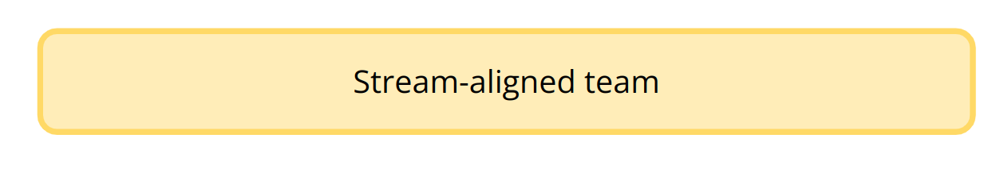
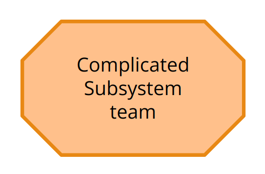
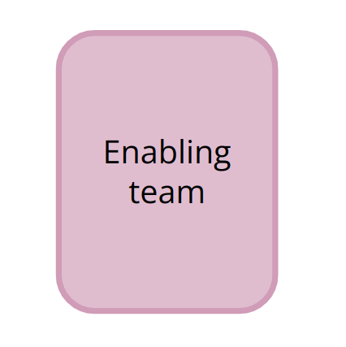

Based on a book, Team Topologies authored by Matthew Skelton & Manuel Pais. References a number of real world case studies and is heavily informed by 'Reverse Conways Law'.
Team topologies are mainly designed for flow of change.
Focuses on a team first approach primarily aiming at reducing team cognitive load.
Discusses four team type and three interaction modes.

Typical capabilities may include:

Responsible for building and maintaining a part of the system that depends on specialist knowledge.
The decision about whether a complicated subsystem team is required is dependant on an assessment of the teams cognitive load not simply that it is a shared component. I.e. the complicated subsystem has to require specialist knowledge.

Responsible for researching, learning and introducing new practices, techniques, tooling, etc.
Composed of specialists in a given technical (or product) domain and they help stream-aligned teams to take on new capabilities.
Strong collaborative nature; they strive to understand the problems and shortcomings of stream-aligned teams in order to provide effective guidance. Sometimes referred to as "Technical Consulting Teams".
Enable stream-aligned teams to deliver work with substantial autonomy.
Provides internal services to reduce cognitive load required from stream-aligned teams.
Provide a small number of high quality services usually using an X-as-a-service interaction mode and defining a team API.
"High Interaction and Mutual Respect"
Working closely together with another team.
A team should use collaboration mode, with at most, one other team at a time.
"Emphasise the User Experience"
Suited to situations where there is a need for one or more teams to use a code library, component. API or platform that "just works". In this model, teams can rely on certain aspects of their technology landscape being provided as a service by other teams.
A team should expect to use X-as-a-Service interaction with many other teams simultaneously, whether consuming or providing a service.
"Help and Be Helped"
Suited to situations where one or more teams would benefit from the active help of another team facilitating (or coaching) some aspect of their work.
This is the main operating mode of an enabling team as the remit of facilitating mode is to:
A team should expect to use the facilitating interaction mode with a small number of other teams simultaneously, whether consuming or providing facilitation.
| Team Type | Collaboration | X-as-a-Service | Facilitating |
|---|---|---|---|
| Stream-aligned | Typical | Typical | Occasional |
| Enabling | Occasional | Typical | |
| Complicated-subsystem | Occasional | Typical | |
| Platform | Occasional | Typical |